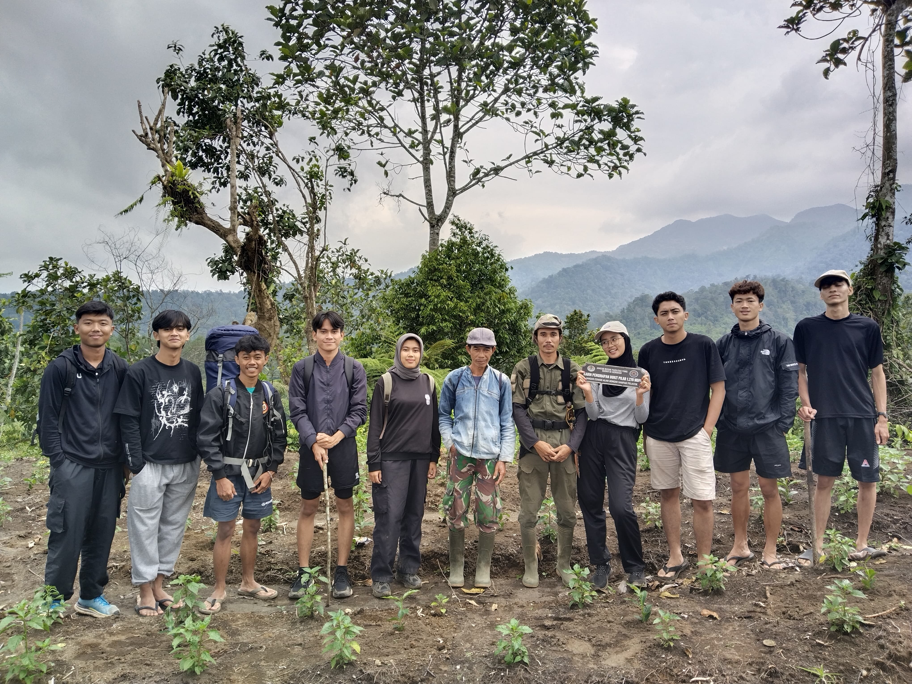
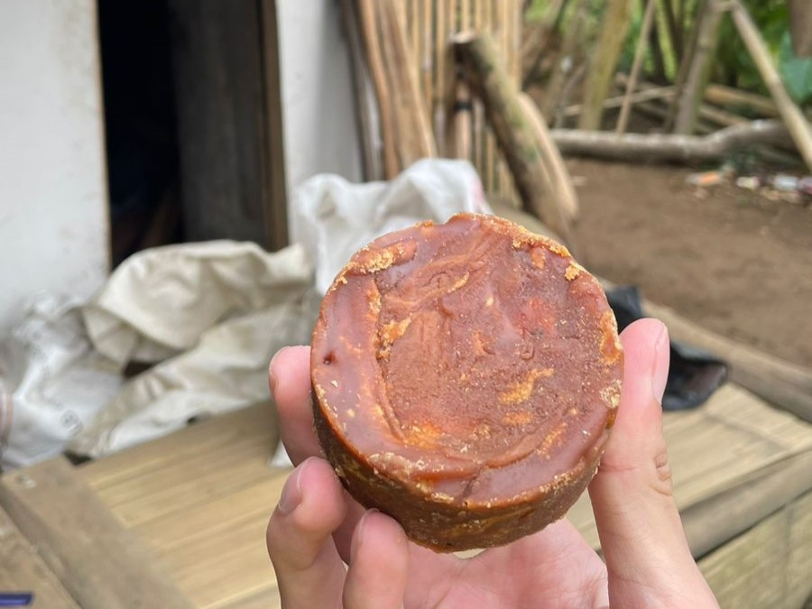
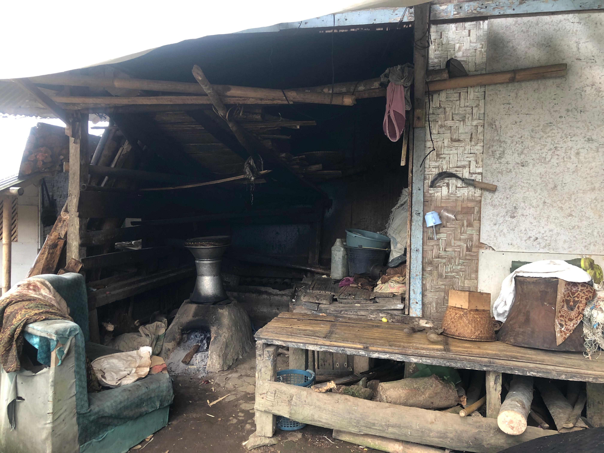
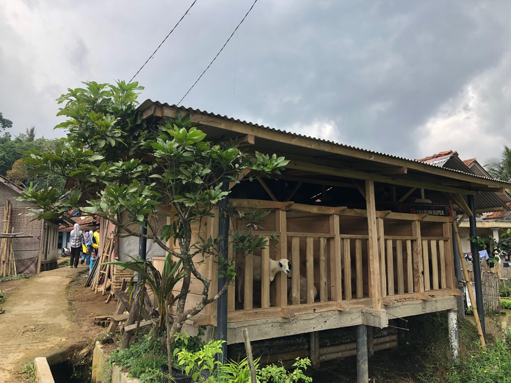

A. Wisata Alam
1. Bukit Pilar

Bukit Pilar adalah salah satu destinasi wisata alam yang terletak di Kecamatan Cigalontang, Kabupaten Tasikmalaya,
Jawa Barat. Tempat ini dikenal dengan pemandangannya yang indah dan suasana alam yang asri, menjadikannya tujuan
favorit bagi pecinta alam dan wisatawan lokal. Bukit ini berada di ketinggian 1270 MDPL yang memberikan panorama
luas dengan latar pegunungan, hamparan sawah, dan perkampungan khas pedesaan.
Nama Wisata : Wisata Alam
Nama Tempat : Bukit Pilar
B. Wisata Buatan
1. Situ Pangangonan

Situ Pangangonan yang terletak di Desa Cogalontang, Kecamatan Cogalontang, Kabupaten Tasikmalaya, menawarkan pengalaman wisata yang cukup menarik, terutama bagi para penggemar aktivitas pemancingan. Danau buatan yang menjadi pusat wisata ini tidak hanya menyajikan pemandangan alam yang indah dan asri, tetapi juga menjadi tempat yang ideal untuk menikmati kegiatan memancing yang menenangkan. Dengan air danau yang jernih dan dikelilingi oleh alam pegunungan, Situ Pangangonan menjadi destinasi yang pas untuk melepas penat. Pengunjung dapat memancing berbagai jenis ikan di danau, baik untuk sekadar bersantai atau mencari tantangan. Fasilitas yang ada juga mendukung kenyamanan pengunjung, seperti area pemancingan yang teratur, gazebo, serta spot foto yang bisa dimanfaatkan untuk mengabadikan momen. Selain aktivitas memancing, tempat ini juga menawarkan suasana yang tenang dan jauh dari keramaian kota, menjadikannya tempat yang cocok untuk berkumpul bersama teman atau keluarga. Dengan lokasinya yang mudah dijangkau dari pusat Kota Tasikmalaya, Situ Pangangonan bisa menjadi alternatif liburan yang menyegarkan sekaligus memberikan pengalaman yang berbeda.
C. Wisata Budaya
1. Jaipongan
Jaipongan adalah seni tari tradisional khas Jawa Barat yang dikenal sebagai simbol budaya Sunda.
Sebagai salah satu bentuk seni yang kaya akan nilai estetika dan makna budaya, jaipongan telah menjadi daya tarik
wisata budaya yang unik. Wisata ini menawarkan pengalaman mendalam bagi
pengunjung untuk mengenal lebih dekat seni tari, musik pengiring, dan makna filosofis yang terkandung dalam setiap gerakan.
Nama Wisata : Wisata Budaya
Nama Kesenian : Jaipong
Lokasi : Kp. Babakan Hamami Rt.15/Rw.06 Desa CIgalontang Kecamatan Cigalontang Kabupaten Tasikmalaya.
2. Sanggar Seni Pancawarna
Sanggar Seni Pancawarna, yang didirikan pada tahun 1980-an oleh Pak Saca Mulyana,
merupakan pusat pelestarian seni budaya khas Sunda yang berlokasi di Dusun 1, Desa Cigalontang,
Kecamatan Cigalontang. Bertempat di balai sawala sebagai pusat latihan secara rutin, menjadi
titik kumpul bagi masyarakat yang ingin belajar dan melestarikan tradisi lokal. Sanggar ini
menghidupkan kembali berbagai kesenian tradisional, seperti degung klasik, jaipong, silat dengan
gerakan khas seperti parepet, tapak 2, dan tapak 3, serta musik Sunda dengan alat seperti kecapi,
suling, kendang, saron, bonang, dan gong.
Dengan kegiatan rutin yang dilaksanakan setiap malam Sabtu, Sanggar Seni Pancawarna tidak hanya
menjadi ruang untuk belajar seni, tetapi juga berperan sebagai penjaga identitas budaya desa.
Meski menghadapi tantangan modernisasi, sanggar ini tetap eksis melalui kontribusinya dalam
berbagai acara adat, undangan budaya, dan kegiatan pelestarian seni lainnya. Didukung oleh
legalitas resmi dari pemerintah Kabupaten Tasikmalaya, Sanggar Seni Pancawarna menjadi simbol
kebanggaan warga lokal, menawarkan pengalaman autentik bagi pengunjung desa wisata.
Nama: Sanggar Seni Pancawarna
Produk: Degung dan Jaipongan, Upacara Adat, Calung dan Reog, Pencak Silat
Alamat: Kp. Cigalontang (Cipadali) RT 08/ RW 01, Desa Cigalontang, Kecamatan Cigalontang, Kabupaten Tasikmalaya
CP: 085322551034
D. UMKM (Usaha Mikro, Kecil, dan Menengah)
1. Keripik Singkong Arneta
Usaha keripik singkong ini merupakan UMKM khas Desa Cigalontang, Kab. Tasikmalaya. Usaha ini telah berjalan dari tahun 2019 – Sekarang
dan telah terjual dibeberapa daerah diantaranya Lembang, Bandung dan Kota Tasikmalaya. Keripik singkong ini menggunakan bahan
utama singkong yang dihasilkan dari petani lokal di Desa Cigalontang dan proses pembuatannya masih manual dengan memanfaatkan
sumber daya manusia yang ada.
Setiap hari bisa memproduksi sebanyak 2 kuintal lebih yang siap untuk dipasarkan ke tempat oleh-oleh yang telah bekerja sama.
Nama UMKM : Keripik Singkong Arneta
Nama Pemilik : Yogi
Produk : Keripik Singkong
Lokasi : Kp. Babakan Hamami Rt.15/Rw.06 Desa CIgalontang Kecamatan Cigalontang Kabupaten Tasikmalaya.
A. PRODUK UNGGULAN
Pada Keripik Singkong Arneta ini masih mempertahankan cita rasa original nya dengan bentuk yang berbeda dari yang lain yaitu pipih memanjang. Keripik singkong ini menggunakan bahan utama yang berkualitas dari petani lokal Cigalontang sehingga.
B. PEMASARANPemasaran produk keripik singkong ini telah terjual ke toko oleh-oleh yang ada di beberapa daerah yaitu ke Lembang, Bandung dan Kota Tasikmalaya.
C. HARGAPemasaran produk keripik singkong ini telah terjual ke toko oleh-oleh yang ada di beberapa daerah yaitu ke Lembang, Bandung dan Kota Tasikmalaya.
D. LOKASILokasi usaha kerajinan anyaman ini terletak di Kp. Babakan Hamami Rt.15/Rw.06 Desa Cigalontang, Kecamatan Cigalontang, Kabupaten Tasikmalaya. Wilayah ini dikenal dengan potensi sumber daya alam yang melimpah, khususnya singkong, yang menjadi bahan utama dalam produksi keripik.
2. FARMER’S COFFE CIGALONTANG
Farmer’s Coffe Cigalontang adalah produk UMKM unggulan yang berasal dari wilayah Cigalontang, Kabupaten Tasikmalaya. Kopi ini dihasilkan dari biji kopi pilihan yang ditanam langsung oleh petani lokal dengan teknik budidaya ramah lingkungan. Proses pengolahan dilakukan secara tradisional namun tetap menjaga kualitas modern, sehingga menghasilkan cita rasa kopi yang khas, autentik, dan berkarakter.
Produk ini tidak hanya menjadi kebanggaan daerah, tetapi juga mendukung pemberdayaan ekonomi petani kopi lokal. Farmer’s Coffee Cigalontang hadir dalam berbagai varian, mulai dari bubuk kopi hingga kopi kemasan siap seduh, sehingga cocok untuk segala kalangan, baik pecinta kopi murni maupun penikmat kopi instan. Dengan mengonsumsi Farmers Coffee Cigalontang, konsumen tidak hanya mendapatkan kopi berkualitas tinggi, tetapi juga turut mendukung keberlanjutan sektor UMKM dan kesejahteraan petani.
Nama UMKM : Farmer’s Coffe Cigalontang
Nama Pemilik : Rizki
Produk : Coffee
Lokasi : Kp Babakan Kiara RT 22 RW 008, Desa Cigalontang, Kecamatan Cigalontang, Kabupaten Tasikmalaya.
Dibuat dengan proses dan bahan baku yang berkualitas, autentik, dan semua bahan baku dari Desa Cigalontang yang memanfaatkan petani lokal.
B. PRODUK LAIN
1. Arabica
Kopi Arabica Cigalontang memiliki rasa khas dengan sentuhan keasaman ringan, manis alami, dan aroma floral yang memikat. Rasa akhir yang lembut dengan nuansa kacang dan cokelat membuatnya cocok bagi penikmat kopi premium. Terdapat tiga varian yaitu natural, honey, dan wine.
2. Robusta
Kopi Robusta Cigalontang memiliki rasa yang lebih tebal dan kuat dengan tingkat kepahitan yang tinggi, cocok untuk pecinta kopi dengan karakter bold. Selain itu, terdapat sedikit rasa earthy dan nutty yang menjadi ciri khas kopi dari wilayah ini.
Farmer’s Coffe Cigalontang sudah terjual di regional, nasional maupun global. Diantaranya sudah ekspor ke Swiss, Dubai, Malaysia, dan Thailand. Di Indonesia pun sudah terjual ke luar kota diantaranya ke Jakarta, Sumatra, dan Kalimantan. Selain itu, Farmer’s Coffe Cigalontang sudah dimasukan ke coffe-coffe yang ada di Tasikmalaya.
D. HARGAHarga dapat disesuaikan untuk pembelian dalam jumlah besar ( grosir) atau Reseller, akan tetapi untuk gula aren cetak tradisional di kisaran Rp.20.000 per 500 gram.
3. PABENTANG (Pandai Besi Cigalontang)
PABENTANG (Pandai Besi Cigalontang) merupakan salah satu UMKM khas Cigalontang yang bergerak di bidang kerajinan pandai besi. Berakar dari tradisi turun-temurun, Pabentang menghasilkan berbagai produk logam berkualitas tinggi yang dibuat secara manual menggunakan teknik tradisional yang diwariskan oleh para leluhur. Dengan memanfaatkan keahlian lokal dan bahan baku terbaik, Pabentang menjadi simbol keahlian dan inovasi masyarakat Cigalontang.
Nama UMKM : PABENTANG (Pandai Besi Cigalontang)
Nama Pemilik : Atep
Produk : Alat Perkakas (peralatan pertanian, rumah tangga dan alat lainnya)
Lokasi : Kp. Babakan Kiara RT 21 RW 008, Desa Cigalontang, Kecamatan Cigalontang, Kabupaten Tasikmalaya.
Pandai Besi Cigalontang ini menggunakan bahan yang berkualitas yaitu baja tanpa campuran lain dan menggunakan alat pembuatan yang masih tradisional.
B. PRODUK LAINPandai Besi Cigalontang banyak memproduksi alat perkakas seperti golok, parang, kkapak, cangkul, pisau, alat-alat outdoor gunung, dan lainnya. Namun tak hanya itu saja, di Pandai Besi Cigalontang ini bisa membuat apa saja sesuai dengan permintaan konsumen.
C. PEMASARANPandai Besi Cigalontang sudah dikirim ke luar kota bahkan ke luar pulau, namun sampai saat ini kebanyakan hanya yang datang ke tempat produksi saja atau ada pemesanan lewat pribadi sehingga tidak ada pemasaran khusus seperti dijual di toko atau yang lainnya.
D. HARGAHarga alat perkakas ini di kisaran Rp. 250.000 – Rp. 300.000 bahkan lebih sesuai dengan keselitan dan permintaan konsumen.
E. LOKASILokasi pembuatan nya berada di Kp. Babakan Kiara RT 21 RW 008, Desa Cigalontang, Kecamatan Cigalontang, Kabupaten Tasikmalaya. Lokasi ini khusus untuk pembuatan alat nya saja, untuk pembuatan sarung alat perkakasnya itu berbeda lokasi namun beda dusun.
4. Pengrajin Anyaman Ki Amar
Usaha pengrajin anyaman merujuk pada kegiatan pembuatan berbagai produk kerajinan tangan dengan teknik anyaman menggunakan bahan-bahan alami, seperti bambu, rotan, atau daun. Dalam usaha anyaman ki amar bahan dasar yang dipakai dalam pembuatan produk seperti Boboko/bakul ( tempat nasi/makanan ), Aseupan (wadah untuk mengukus nasi atau makanan lain.) dan Dudukuy ( penutup kepala) adalah berbahan dasar bambu. Proses pembuatan dimulai dengan pemilihan bambu berkualitas, yang kemudian dijemur di samping tungku api untuk mengeringkannya. Setelah itu, bambu diolah dengan teknik diwengkung dan diraut agar memiliki bentuk yang diinginkan. Tahapan selanjutnya adalah anyaman, di mana bambu dianyam menjadi bentuk dudukuy atau boboko. Tali yang digunakan pada bagian atas produk biasanya terbuat dari plastic yang dibeli oleh pengrajin, memberikan kekuatan bagi produk dan menambah daya Tarik.
Produk dudukuy dan boboko dipasarkan melalui pengepul yang menjualnya ke pasar-pasar lokal atau kampung-kampung. Harga yang terjangkau, sekitar 10 ribu rupiah per buah dan 200 ribu rupiah per sekodi, membuat produk ini mudah diakses oleh masyarakat. Penjualan dilakukan secara seadanya, tergantung pada kemauan pengrajin dan tenaga mengingat umur pengrajin yang sudah lanjut usia, jumlah produksi mulai dari sekodi hingga 50 buah.
Nama UMKM : Anyaman Ki Amar
Nama Pengrajin : Amar 87Tahun (Pengrajin anyaman) dan istri 74tahun.
Produk : Boboko (tempat nasi/makanan) dan Dudukuy (penutup kepala).
Lokasi : Kp. Paniis Rt.13/Rw.05 Desa CIgalontang Kecamatan Cigalontang Kabupaten Tasikmalaya.
Dua produk unggulan dari kerajinan anyaman Ki Amar adalah :
1. boboko ( bakul)
2. dudukuy ( penutup kepala)
Boboko berfungsi sebagai tempat menyimpan nasi atau makanan, dan sangat dihargai karena desainnya yang kuat dan fungsional. Sementara itu, dudukuy merupakan penutup kepala yang juga mengalami peningkatan permintaan pada saat musim panen. Selain melindungi dari sinar matahari, dudukuy memiliki nilai budaya yang tinggi dan sering digunakan dalam berbagai acara tradisional. Keduanya, boboko dan dudukuy, tidak hanya memenuhi kebutuhan praktis, tetapi juga melestarikan tradisi dan kearifan lokal masyarakat.
Aseupan
Aseupan adalah wadah tradisional yang terbuat dari bahan dasar bambu, digunakan untuk mengukus nasi atau makanan lainnya. Bambu dipilih karena sifatnya yang ringan, kuat, dan ramah lingkungan. Desain aseupan yang khas, biasanya berbentuk kerucut, dilengkapi dengan lubang-lubang di bagian bawah untuk memungkinkan uap panas masuk, sehingga makanan dapat matang merata. Proses pengukusan dengan aseupan tidak hanya menjaga kelembapan dan rasa alami makanan, tetapi juga merupakan metode memasak yang lebih sehat dibandingkan dengan menggoreng.
Pemasaran produk kerajinan anyaman bambu dilakukan dengan menjualnya kepada pengepul, yang kemudian mendistribusikannya ke berbagai kampung dan pasar. Hal ini memungkinkan produk mencapai konsumen yang lebih luas, terutama di daerah pedesaan di mana kebutuhan akan barang-barang tradisional masih tinggi. Dengan adanya pengepul, proses distribusi menjadi lebih efisien dan membantu mempertahankan keberlanjutan usaha. Produksi kerajinan ini tidak memiliki jadwal yang pasti; proses produksi dilakukan sesuai kebutuhan dan ketersediaan bahan. Kegiatan ini melibatkan Bapak dan Ibu Amar, yang telah menjalankan usaha ini sejak Pak Amar masih kecil. Dengan pengalaman yang telah terakumulasi selama bertahun-tahun, mereka mampu menghasilkan produk berkualitas meskipun dalam waktu yang tidak teratur.
D. HARGAHarga untuk produk anyaman seperti boboko, dudukuy, dan aseupan ditetapkan cukup terjangkau, yaitu sekitar 10.000 rupiah per piece. Bagi pembeli yang ingin membeli dalam jumlah lebih banyak, tersedia juga penawaran dalam bentuk sekodi, yang dihargai 200.000 rupiah. harga ini memberikan fleksibilitas bagi konsumen, baik yang ingin membeli satuan untuk kebutuhan pribadi maupun bagi pengepul atau pedagang yang memerlukan stok untuk dijual kembali. Dengan harga yang kompetitif, produk-produk ini dapat diakses oleh berbagai kalangan, sehingga mendorong peningkatan penjualan dan memperluas jangkauan pasar.
E. LOKASILokasi usaha kerajinan anyaman ini terletak di Kampung Paniis, RT 13 RW 05, Desa Cigalontang, Kecamatan Cigalontang, Kabupaten Tasikmalaya. Wilayah ini dikenal dengan potensi sumber daya alam yang melimpah, khususnya bambu, yang menjadi bahan utama dalam produksi anyaman. Lokasi produksi anyaman bambu ini berada di lingkungan yang asri dan nyaman karena berada di pedesaan yang di kelilingi oleh persawahan yang memberikan nuansa asri dan adem bagi siapapun yang berniat untuk melihat proses produksi secara langsung dari anyaman bambu Ki amar.
5. Gula Aren Pak Sarim

Gula Aren Pak Sarim adalah produk asli dari Cigalontang, Tasikmalaya, yang dibuat dengan metode tradisional menggunakan nira dari pohon aren pilihan. Dengan rasa manis alami, warna cokelat keemasan, dan aroma khas yang harum, gula aren ini menjadi pilihan sempurna untuk kebutuhan dapur sehari-hari maupun bahan baku kuliner.
Nama UMKM : Gula Aren Pak Sarim
Nama Pemilik : Sarim
Produk : Gula Aren
Lokasi : Kp. Paniis Rt.13/Rw.05 Desa CIgalontang Kecamatan Cigalontang Kabupaten Tasikmalaya.
Dibentuk menggunakan cetakan tradisional, gula ini mempertahankan keaslian rasa dan bentuk khasnya. Cocok untuk bahan masakan atau campuran minuman tradisional seperti wedang jahe dan jamu.
B. PRODUK LAIN
1. Gula Aren Jahe
Kombinasi gula aren dengan ekstrak jahe alami, cocok untuk membuat wedang jahe yang hangat dan menyehatkan.
2. Permen Gula Aren
Permen tradisional berbahan dasar gula aren dengan tambahan rasa seperti jahe, pandan, atau kopi, ideal sebagai camilan sehat.
3. Gula Aren Plus Rempah
Gula aren dengan tambahan rempah seperti kayu manis, cengkeh, atau kapulaga, cocok untuk minuman herbal atau masakan dengan aroma khas.
Titipkan produk di toko oleh-oleh, pasar tradisional, dan minimarket lokal. Dan Kerjasama dengan pedagang kopi tradisional atau warung makan untuk menggunakan gula aren sebagai bahan utama mereka.
D. HARGAHarga dapat disesuaikan untuk pembelian dalam jumlah besar ( grosir) atau Reseller, akan tetapi untuk gula aren cetak tradisional di kisaran Rp.20.000 per 500 gram.
6. Wajit Mak Eroh

Di Kampung Panyandungan sebuah daerah di Kabupaten Tasikmalaya, terdapat sebuah usaha mikro, kecil, dan menengah (UMKM) yang memproduksi makanan tradisional khas Parahyangan, yaitu Wajit. UMKM ini dikelola oleh seorang warga bernama Bu Eroh yang telah melestarikan warisan kuliner lokal melalui usaha produksi Wajit yang autentik dan berkualitas.
Nama UMKM : Wajit Mak Eroh
Nama Pemilik : Eroh
Produk : Wajit
Lokasi : Kp. Panyandungan Rt.09/Rw.04 Desa CIgalontang Kecamatan Cigalontang Kabupaten Tasikmalaya.
Wajit Bu Eroh menawarkan beberapa jenis pilihan wajit yang menarik yang berbaahan dasar beras ketan dan singkong. Di antara semua varian, Angleng menjadi favorit pelanggan. Angleng adalah makanan tradisional khas Priangan yang dibuat dari tepung beras ketan, gula merah, dan kelapa. Makanan ini dibungkus menggunakan daun jagung kering. Keunikan angleng terletak pada teksturnya yang kering di bagian luar namun lembut di bagian dalam.
B. PRODUK LAINWajit Bu Eroh merupakan salah satu kuliner khas yang memiliki tiga varian unik, yaitu wajit ketan, angleng, dan wajit singkong. Wajit ketan dikenal dengan teksturnya yang kenyal dan rasa manis legit dari campuran beras ketan dan gula merah. Angleng menawarkan sensasi rasa yang mirip, namun dengan bahan dasar parutan kelapa dan dikemas dengan kulit jagung kering yang memberikan aroma khas dan kelezatan tersendiri. Sementara itu, wajit singkong hadir dengan cita rasa sederhana yang memadukan singkong parut dengan gula merah, menciptakan perpaduan rasa manis dan gurih yang menggugah selera. Ketiga varian ini menjadi pilihan menarik bagi pecinta kuliner tradisional.
C. PEMASARANWajit Bu Eroh telah berhasil meraih pasar yang cukup luas, tidak hanya populer di daerah asalnya seperti Singaparna, tetapi juga kerap menjadi pilihan utama sebagai oleh-oleh khas yang dibawa oleh para pelancong hingga ke luar daerah, bahkan sampai ke Sumatera. Keunikan rasa dan kualitasnya yang terjaga membuat wajit ini semakin dikenal dan diminati, sehingga menjadi simbol kebanggaan kuliner lokal.
D. HARGAHarga Wajit sangat terjangkau, yaitu Rp5.000 per cup dengan isi sepuluh potong kecil. Harga satuan hanya Rp500 per potong, menjadikannya pilihan camilan tradisional yang ekonomis dan berkualitas tinggi.
E. LOKASIWajit Bu Eroh diproduksi di Kampung Panyandungan, RT.09/RW.04, Desa Cigalontang, Kecamatan Cigalontang, Kabupaten Tasikmalaya. Lokasi ini terletak di daerah pedesaan yang sejuk dengan suasana yang asri, proses produksi yang dilakukan di lingkungan pedesaan ini memberikan nuansa alami yang turut menambah nilai dari produk wajit tersebut.
7. Sarung Golok Pak Engkus
Merupakan salah satu usaha kerajinan tangan yang mengkhususkan dalam pembuatan Sarung untuk golok dan pisau, menggunakan bahan kayu mahoni sebagai bahan dasarnya. Setiap produk yang dihasilkan adalah karya tangan yang unik, dengan pilihan desain polosan atau ukiran yang dapat disesuaikan dengan permintaan pelanggan.
Proses produksi pembuatan sarung golok ini membutuhkan waktu antara satu hingga tiga hari, dengan produk polosan yang dapat diselesaikan dalam waktu satu hari, sementara produk dengan ukiran membutuhkan waktu sekitar tiga hari untuk memastikan detail dan kualitasnya.
Usaha ini memiliki jaringan pemasaran yang meliputi distributor serta pesanan langsung dari pelanggan, dengan produk yang dapat dipasarkan sebagai oleh-oleh khas desa wisata atau digunakan sebagai peralatan rumah tangga yang fungsional dan estetis.
Dengan kualitas produk yang unggul dan proses pembuatan yang cermat, Sarung Golok Pak Engkus bukan hanya memberikan nilai tambah bagi perekonomian lokal, tetapi juga memperkenalkan seni kerajinan kayu khas Desa Cigalontang.
Nama UMKM : Sarung Golok Bapak Engkus
Nama Pemilik : Engkus
Produk : Sarung Golok
Lokasi : Kp. Paniis, RT 13/RW 05, Desa Cigalontang, Kecamatan Cigalontang, Kabupaten Tasikmalaya.
Produk Sarung Golok Bapak engkus ini diproduksi dengan bahan kayu mahoni pilihan, menawarkan produk sarung perkakas unggulan yang tidak hanya fungsional tetapi juga estetis, dengan desain yang dapat disesuaikan sesuai pesanan, baik dengan ukiran khas maupun polosan, yang membuatnya cocok untuk berbagai kebutuhan, mulai dari penggunaan sehari-hari hingga koleksi; harga produk berkisar antara 100.000 hingga 200.000 IDR tergantung pada model dan tingkat kerumitan ukiran, dengan durasi produksi yang cepat, yaitu satu hari untuk model polosan dan hingga tiga hari untuk model berukir, serta dipasarkan baik melalui distributor maupun langsung berdasarkan pesanan.
B. PRODUK LAINTidak hanya memproduksi Sarung golok saja tetapi juga menyediakan pegangan untuk berbagai jenis perkakas lainnya. Dengan menggunakan bahan kayu mahoni berkualitas, Pak Engkus memproduksi pegangan yang kokoh untuk berbagai alat, seperti golok, parang, pisau, dan alat perkakas tradisional lainnya. Produk-produk yang dihasilkan memiliki dua pilihan utama: model polosan dan model ukiran. Proses pembuatan cover dan pegangan ini dapat disesuaikan dengan permintaan pelanggan, baik itu dari segi desain maupun tingkat kesulitan ukiran.
C. PEMASARANProduk Sarung Golok ini tidak hanya melayani pasar lokal, tetapi juga menjalin kerja sama dengan distributor serta menerima pesanan dari pelanggan. Produk-produk yang dihasilkan tidak hanya memiliki fungsi sebagai alat perkakas, tetapi juga memiliki nilai seni yang tinggi, menjadikannya pilihan yang tepat sebagai oleh-oleh khas dari desa wisata.
D. HARGAHarga produk Sarung Golok dari Pak Engkus bervariasi antara 100 ribu hingga 200 ribu rupiah atau lebih, tergantung pada model dan tingkat kesulitan ukiran yang diminta; produk dengan desain polosan (tanpa ukiran) biasanya dihargai lebih rendah, sekitar 100 ribu rupiah, dan dapat diselesaikan dalam waktu satu hari, sementara produk dengan ukiran yang lebih rumit dan detail, yang memerlukan waktu produksi hingga tiga hari, dihargai lebih tinggi karena proses pengerjaannya yang lebih teliti dan memerlukan waktu lebih lama.
E. LOKASILokasi produksi Sarung Golok milik Pak Engkus terletak di Kampung Paniis RT.13/RW.05, Desa Cigalontang, Kecamatan Cigalontang, Kabupaten Tasikmalaya yang berada di wilayah pedesaan dengan suasana yang tenang dan lingkungan yang mendukung. Proses pembuatan Sarung Golok tradisional. Desa ini dikenal dengan kearifan lokalnya yang menghargai keterampilan kerajinan tangan, Lokasi di desa ini memungkinkan Pak Engkus untuk mengakses sumber daya alam yang berkualitas, seperti kayu mahoni, yang digunakan sebagai bahan utama dalam pembuatan produk Sarung Golok.
8. Kebul Solder (Peternakan Domba Tangkas)

Kebul solder adalah hasil unggulan dari pertenakan domba tangkas yang dikelola oleh Bapak Ade. Peternakan ini memilih jenis domba yang telah terpilih untuk dilombakan melalui proses seleksi ketat, yaitu dengan menghasilkan domba dengan kualitas fisik yang unggul, berbadan tegap, dan memiliki ketangkasan yang luar biasa. Domba-domba tersebut telah dilatih dalam berbagai kompetisi dan lomba, menunjukkan ketahanan fisik serta kecepatan yang luar biasa, menjadikannya ideal untuk berbagai keperluan peternakan dan lomba.
Nama UMKM : Kebul Solder (Peternakan Domba Tangkas)
Nama Pemilik : Pak Ade
Produk : Domba
Lokasi : Kp. Paniis, RT.15/RW.03, Desa Cigalontang, Kecamatan Cigalontang, Kabupaten Tasikmalaya.
Peternakan Domba Tangkas Pak Ade dikenal karena kualitas fisiknya yang luar biasa dan ketangkasan tinggi. Domba pilihan kebul solder merupakan hasil seleksi ketat yang bertujuan untuk menghasilkan hewan dengan performa tinggi. Domba kebul solder juga memiliki tubuh yang tegap, kelincahan dan stamina yang sangat baik, sehingga , menjadikannya pilihan unngul untuk dilombakan atau kompetensi dan diperjual belikan.
B. JENIS LAINJenis lainnya dari Peternakan Domba Kebul Solder milik Pak Ade adalah keturunan atau anakan dari domba unggul Kebul Solder. Anak-anak domba tersebut juga memiliki kualitas tinggi dan potensial, mewarisi ketangkasan dan kekuatan dari induk-induk terbaiknya. Dengan kualitas yang terjamin, anak-anak domba dari Kebul Solder ini menjadi pilihan yang tepat bagi peternak yang ingin memperluas usaha mereka dengan bibit unggul.
C. PEMASARANPeternakan Kebul Solder tidak hanya melibatkan penjualan domba saja, tetapi juga memanfaatkan potensi kompetesi dan lomba domba yang diadakan di Garut. Garut sendiri dikenal sebagai daera yang memiliki tradisi panjang dalam adu domba, di mana lomba ketangkasan domba sering diadakan.
D. HARGAHarga yang diperjual belikan dari domba-domba yang ada di peternakan Kebul Solder itu sendiri seharga 10 juta-12 juta, domba di peternakan Kebul solder menawarkan kualitas terbaik bagi peternak yang ingin mengembangkan usaha ternaknya.
E. LOKASILokasi usaha dari Peternakan Kebul Solder milik Pak Ade terletak di Kampung Paniis RT/15 RW/03, Desa Cigalontang, Kecamatan Cigalontang, Kabupaten Tasikmalaya yang terletak di daerah pedesaan dengan suasana yang tenang dan alami dengan pemandangannya. Di desa ini memiliki nilai-nilai kearifan lokal yang kuat, dimana peternakan domba tradisional dan kualitas hewan ternak sangan dihargai. Keberadaan di kawasan ini memudahkan Pak Ade untuk memanfaatkan sumber daya alam yang melimpah, seperti padang rumput hijau yang subur, yang menjadi faktor pendukung utama dalam pemeliharaan dan pertumbuhan domba Kebul Solder yang sehat dan berkualitas.
9. Gula Aren Bu Popong
Gula Aren adalah produk unggulan yang dihasilkan oleh Bu Popong di Kampung Paniis, Tasikmalaya. Usaha ini fokus pada produksi gula aren berkualitas tinggi dengan metode tradisional yang menjaga keaslian dan cita rasa alami.
Nama UMKM :Gula Aren Bu Popong
Nama Pemilik : Popong
Produk : Gula Aren
Produksi : 3-15 toros/hari
Lokasi : Kp. Paniis, RT.13/RW.05, Desa Cigalontang, Kecamatan Cigalontang, Kabupaten Tasikmalaya.
Bu Popong mengelola usaha gula aren dengan kapasitas produksi yang bervariasi antara 3 hingga 15 toros per hari. Gula aren yang dihasilkan memiliki kualitas yang sangat baik, berkat proses pengolahan yang alami dan tradisional. Setiap langkah proses ini dilakukan dengan cermat untuk menjaga keaslian dan citra rasanya. Hasil akhirnya adalah gula aren yang memiliki warna emas cerah dan tekstur yang lembut, serta rasa manis yang khas. Produk ini dikenal karena rasa manisnya yang khas dan aroma yang menggugah selera, menjadikannya pilihan ideal untuk berbagai keperluan kuliner.
B. KEUNGGULAN PRODUKSalah satu keunggulan utama gula aren Bu Popong adalah tidak menggunakan bahan kimia pengawet atau pewarna. Hal ini membuat produk ini aman untuk dikonsumsi tanpa khawatir tentang efek negatif dari zat-zat tambahan. Gula aren ini memiliki masa simpan yang cukup lama jika disimpan dengan benar. Teksturnya yang keras dan tidak mudah basah membuatnya ideal untuk digunakan dalam waktu lama tanpa kehilangan kualitas. Gula aren bisa digunakan sebagai pemanis alami dalam berbagai jenis masakan dan minuman. Mulai dari hidangan dessert klasik hingga saus-saus khusus, gula aren menambahkan sentuhan autentik dan lezat.
C. PEMASARANGula aren dari Bu Popong telah mulai dikenal luas di kalangan konsumen lokal. Dengan meningkatnya permintaan, usaha ini berpotensi untuk berkembang lebih jauh, melayani pasar yang lebih luas baik di tingkat lokal maupun regional. Strategi pemasaran yang efektif termasuk promosi langsung melalui pasar tradisional, partisipasi dalam acara-acara kuliner lokal, serta penggunaan media sosial untuk meningkatkan kesadaran merek.
D. LOKASIBerada di Kampung Paniis RT/RW 13/05, Desa Cigalontang, Kecamatan Cigalontang, Kabupaten Tasikmalaya, usaha Bu Popong memiliki keuntungan besar dari lingkungan pedesan yang kaya akan sumber daya alam. Keberadaan pohon aren di sekitar lokasi mendukung produksi gula aren yang berkualitas tinggi. Suasana pedesaan yang tenang juga memfasilitasi dan dedikasi pekerja dalam menjaga standar mutu produk. Dengan komitmen terhadap kualitas dan metode produksi tradisional, Bu Popong berusaha untuk menjaga warisan kuliner lokal sambil memenuhi kebutuhan pasar modern. Inovasi kontinu dalam teknologi pengolahan dan strategi pemasaran akan membantu meningkatkan visibilitas dan popularitas gula aren Bu Popong di tengah-tengah masyarakat.
10. Beras Ketan Hitam
Pabrik beras ketan hitam di desa Cigalontang merupakan industri pengolahan beras ketan hitam yang melayani kebutuhan pasar lokal dan regional. Pabrik ini mengolah bahan baku berupa padi ketan hitam yang sebagian besar dipasok oleh petani-petani di sekitar desa Cigalontang dan daerah sekitarnya. Adapun waktu untuk produksi beras ketan hitam setiap 6 bulan sekali.
A. Karakteristik Beras Ketan Hitam
1. Warna dan Tekstur
Beras ketan hitam memiliki warna hitam pekat yang berubah menjadi ungu saat dimasak. Warna ini berasal dari pigmen antosianin, dan juga memberikan sifat atioksidan yang kuat.
2. Kandungan nutrisi
Dalam 100 gram ketan hitam matang, terdapat sekitar 181 kalori, 57 gram air, serta
nutrisi penting karbohidrat, protein, lemak dan serat, ketan hitam juga mengandung
zat besi yang penting untuk pembentukan sel darah merah.
1. Penerimaan dan penyortiran padi ketan hitam
2. Pengeringan menggunakan mesin pengering atau dijemur di bawah sinar matahari
3. Penggilingan padi menjadi beras menggunakan mesin huller
4. Pemisahan beras dari sekam
5. Pemisahan menggunakan nyiru/nampah untuk memisahkan padi dan beras
6. Penyortiran kualitas beras
7. Pengemasan dalam berbagai ukuran sesuai kebutuhan pasar
1. Menyediakan lapangan kerja bagi masyarakat setempat
2. Memberikan nilai tambah pada hasil pertanian lokal
3. Mendukung rantai pasok beras ketan hitam di wilayah tersebut
Beras tersebut selanjutnya akan dijual ke berbagai tempat contohnya ke daerah garut dan bandung. Akan tetapi beras tersebut juga akan dijual kepada warga lokal desa Cigalontang untuk kebutuhan masing-masing.
Namun perlu saya sampaikan bahwa karena saya tidak memiliki data spesifik tentang pabrik beras ketan hitam di desa Cigalontang, deskripsi di atas merupakan gambaran umum berdasarkan karakteristik typical pabrik pengolahan beras ketan hitam di daerah pedesaan.